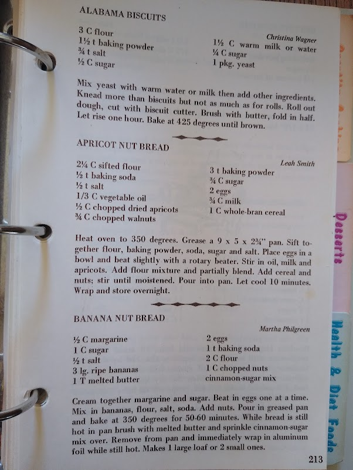

Mom's Banana Bread

What is It???
This is my mom's banana bread recipe. I cannot live without it.
Ingredients
- 1/2 cup butter
- 1 cup sugar
- 1/2 teaspoon salt
- 3 large ripe bananas (the older the better)
- 1 tablespoon melted butter
- 2 eggs
- 1 teaspoon baking soda
- 2 cups flour
- 1 cup chopped nuts (optional)
- Cinnamon-sugar mix
Instructions
- Preheat oven to 350 degrees.
- Cream together butter and sugar.
- Beat in eggs one at a time.
- Mix in bananas, flour, salt, baking soda.
- Add nuts.
- Pour in greased pan(s) and bake for 50-60 minutes.
- While bread is still hot in pan, brush with melted butter and sprinkle cinnamon-sugar mix over.
- Remove from pan and immediately wrap in aluminum foil while still hot.
Makes one large loaf or two small ones.
My mom's recipe:
